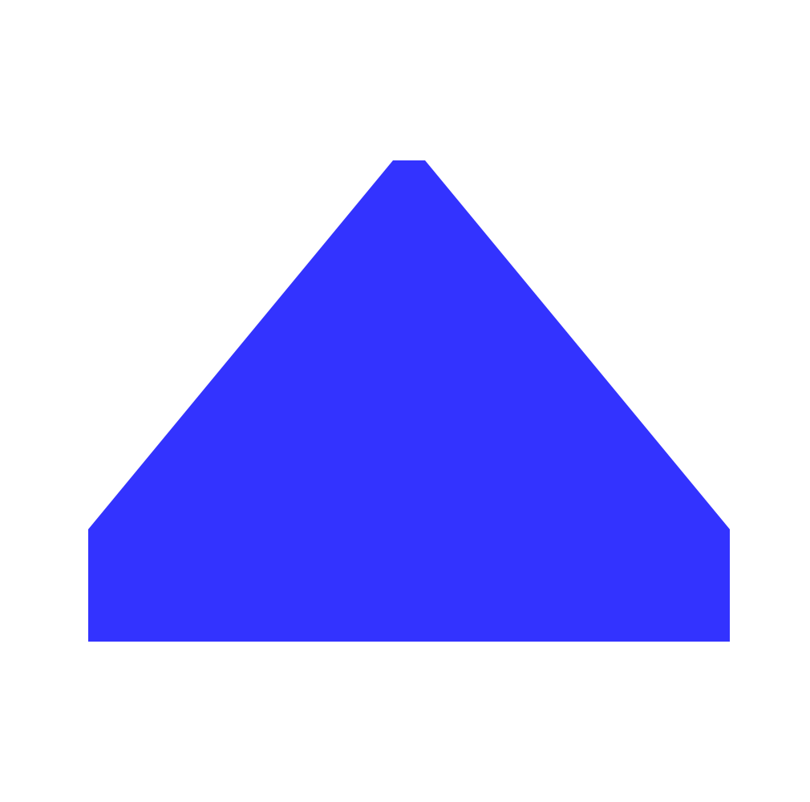

Novelette uses most TeX ligatures, But not all!
These are standard "TeX ligatures", always enabled:
`` (two grave) become left curly double quotes.
'' (two quotesingle) become right curly double quotes.
` (isolated grave) becomes left curly single quote.
' (isolated quotesingle) becomes right curly single quote, also used
as the apostophe.
The comma may be used for German base9 single quote. If you need that actual character, which looks exactly like comma, you may paste it from a Unicode character map.
,, (two comma) is converted to German base9 double quote.
<< (two less) is converted to left double guillemet.
>> (two greater) is converted to right double guillemet.
If you need single guillemets, paste them from a Unicode character map.
--- (three hyhen) converts to emdash.
-- (two hyphen) converts to en dash.
Word processors often convert -- to emdash. If novelette sees an emdash
followed by a hyphen, it assumes that a word processor was involved, and converts the
combination to a single emdash.
!` (exclam grave) and ?` (question grave) are converted to
their Spanish inversions. If the reult is higher or lower than you need, use
\up{!`} \up{?`} or \dn{!`} \dn{?`} to adjust the vertical
position.
Standard LaTeX converts the " character to right curly quotes. This is a problem, because word processors convertthose characters to left or right curly quotes, depending on context (smart quotes). Worse, the fonts used for many text editors, and on-screen PDF, make it hard to distinguish left from right. But in print, the flaw is easily noticed.
Novelette leaves " as-is. After typesetting, Lua inspects each page for the presence of that character. If seen, it is a problem, and your document is demoted to draft mode.
The \real{content} command turns off TeX ligatures in its content.
Thus, \real{`} prints the grave, instead of left curly single quote, and
\real{<<} prints two less-than symbols, instead of left double guillemet.
When you use \real, it hides its content from Lua flaw inspection.
Don't use it, unless you need it.
Something like \real{tomato} prints tomato. Can't get more real than that!
Standard LaTeX has a problem with triple characters ``` and '''.
No problem with Novelette!
Default behavior: Three consecutive ``` and three consecutive '''
are interpeted American-style. Double quotes are on the outside, separated by narrow
nonbreaking space from single quotes on the inside. This is also used for many British books.
If you must have it the other way (single outside, double inside), then use
\enable{britq} in preamble. The is a global setting.
Note that this does not switch all single quotes to double quotes, or vice-versa. All it does is resolve triplets.
Novelette uses short-arm f. There is no need for the ff fi fl ligatures,
because the characters will not overlap.
Zut! Or should I say, Zut !
Ordinary LaTeX uses the asciitilde (~) as nonbreaking space. In Novelette, it is a narrow nonbreaking space, suitable for use when you need it for French punctuation spacing.
Zut~!

TOP